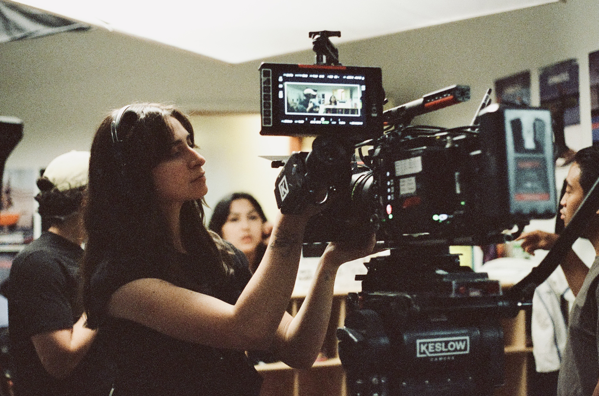

About me
Sofia Abud is a Mexican cinematographer and photographer based in Toronto.
Her work is rooted in an intimate exploration of the human experience, creating images that delve into themes of identity, belonging, heritage, and memory. She is often inspired by everyday moments that shape how we see ourselves and the world around us. Sofia enjoys working closely with other artists to bring meaningful stories to life, adapting her visual and stylistic approach to each project's needs.
Sofia is equally drawn to music as a powerful storytelling tool. She composes immersive soundscapes for film, exploring the union of visuals and audio as an opportunity to create layered, transformative experiences.
Lets connect!
sofiaabud@gmail.com